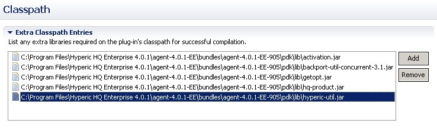

Classpath tab is used to modify needed classpath settings in project itself for automatic compilation, build properties for successful export operation and needed classpath settings found from xml descriptor file. Some of the jar files has to exist in projects classpath for successful compilation, but doesn't need to exist in HQ plug-ins classpath since some of the classes are automatically added by HQ agent classloader. Hypclipse will automatically resolve these dependencies.
